6 이변량 확률변수
6.1 결합분포와 주변분포
결합확률은 확률변수 \(X\)와 \(Y\)가 같은 표본공간 내에서 정의될 때 성립
이변량 확률변수 \(X\)와 \(Y\)의 결합확률:
\(P(X=x, Y=y)\) 또는 간단히 \(p(x,y)\)로 표시
같은 표본공간 내에서 정의된 \(X, Y\)가 \(X=x, Y=y\)일 때의 확률
결합분포(joint distribution): 두 확률변수 \(X\)와 \(Y\)의 분포
\(X\), \(Y\)가 동일한 표본공간 내에서 정의된 이산형 확률변수라고 하면, 결합확률질량함수(joint probability mass function) \(p(x,y)\)는 다음과 같이 정의된다. \[p(x,y)=P(X=x, Y=y)\] 두 확률변수 \(X\), \(Y\)의 범위가 각각 \(a\le X \le b\), \(c\le Y \le d\)라고 할 때 결합확률 \(P(a\le X \le b, c\le Y \le d)\)는 다음과 같다. \[P(a\le X \le b, c\le Y \le d)=\sum_{x=a}^b \sum_{y=c}^d p(x,y)\]
어떤 보험회사는 자동차보험과 생명보험의 두 가지 서비스를 제공하고 있다. 자동차 보험은 10만원과 25만원 두 가지 종류가 있고, 생명보험은 10만원, 20만원, 25만원 세 가지 종류가 있다. 만일 두 개의 보험 모두에 가입되어 있는 고객 중에 한 명을 무작위로 선택했을 때, 확률변수 \(X\)를 자동차보험의 종류라 하고, \(Y\)를 생명보험의 종류라고 하자. \((X,Y)\)의 모든 가능한 결과를 나열해 보면, (10,10), (10,20), (10,25), (25,10), (25,20), (25,25)가 된다. 이때 \(X, Y\)의 결합확률질량함수는 다음과 같다고 하자.
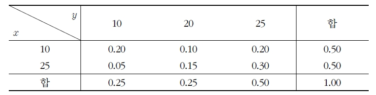
(풀이) \[p(10,20)=P(X=10, Y=20)= 0.1\] \[P(Y\ge 20)=p(10,20)+p(25,20)+p(10,25)+p(25,25)=0.75\]
예제 6-1의 결합분포
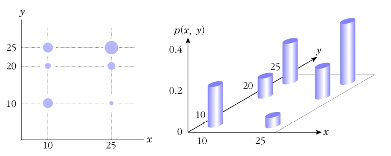
결합확률은 한 개의 변수에서 정의되었던 확률의 공리가 그대로 적용됨. 즉, 모든 \(x\), \(y\)에 대해서 \(p(x,y)\ge 0\)와 \(\sum_x \sum_y p(x,y)=1\)이 성립
확률변수 \(X\)의 주변확률질량함수(marginal probability mass function): 결합확률질량함수 \(p(x,y)\)를 모든 \(y\)에 대해서 합해 줌으로써 유도되는 질량함수
확률변수 \(X\)의 분포를 \(X\)의 주변분포(marginal distribution)라고 함
마찬가지로 \(p(x,y)\)를 모든 \(x\)에 대해서 합해 줌으로써 유도되는 질량함수를 확률변수 \(Y\)의 주변확률질량함수라고 함
\(X\), \(Y\)의 주변확률질량함수 \(p_X (x)\), \(p_Y (y)\)는 다음과 같이 정의된다. \[p_X(x)=P(X=x)=\sum_y p(x,y), \hskip10pt p_Y(y)=P(Y=y)=\sum_x p(x,y)\]
예제 6-1에서 \(X=10\)일 때와 \(X=25\)일 때의 각각의 주변확률질량함수 값을 구하면 다음과 같다.
(풀이) \[p_X(10)=p(10,10)+p(10,20)+p(10,25)=0.5\] \[p_X(25)=p(25,10)+p(25,20)+p(25,25)=0.5\]
따라서 확률변수 \(X\)의 주변확률질량함수는 다음과 같다. \[p_X(x)=\begin{cases} 0.5, \hskip5pt x=10, 25 \\ 0,\hskip5pt \text{그 외} \end{cases}\]
마찬가지로 확률변수 \(Y\)의 주변확률질량함수는 다음과 같다. \[p_Y(y)=\begin{cases} 0.25, \hskip5pt y=10, 20 \\ 0.5, \hskip5pt y=25\\ 0,\hskip5pt \text{그 외} \end{cases}\]
\(X\), \(Y\)가 동일한 표본공간 내에서 정의된 연속형 확률변수라고 하면, 결합확률밀도함수(joint probability density function) \(f(x,y)\)는 다음을 만족한다.
\(f(x,y)\ge 0\)
\(\int_{-\infty}^{\infty}\int_{-\infty}^{\infty}f(x,y)dxdy=1\)
따라서 결합확률밀도함수를 이용한 결합확률은 다음과 같다. \[P((X,Y)\in A)=\int \int_A f(x,y)dxdy\] 즉, 두 확률변수 \(X\), \(Y\)의 범위가 각각 \(a\le X \le b\), \(c \le Y \le d\)라고 할 때 결합확률 \(P(a\le X \le b, c\le Y \le d)\)는 다음과 같다. \[P(a\le X \le b, c\le Y \le d)=\int_a^b \left( \int_c^d f(x,y)dy \right) dx\]
결합확률밀도함수는 이산형인 경우와 마찬가지로 모든 \(x, y\)에 대해서 \(f(x,y)\ge 0\)와 \(\int_{-\infty}^{\infty}\int_{-\infty}^{\infty}f(x,y)dxdy=1\)이 성립
결합확률밀도함수 \(f(x,y)\)는 3차원 좌표공간에서 임의의 \((x,y)\) 점 위의 밀도 \(f(x,y)\)를 갖는 표면(surface)으로 나타낼 수 있음. 즉, \(P((X,Y)\in A)\)는 면적 \(A\)상의 \(f(x,y)\)로 정의되는 표면하의 부피(volume)가 됨
이는 한 개의 확률변수 \(X\)가 확률밀도함수 \(f(x)\)를 가질 때, \(P(X\in A)\)는 선분 \(A\)상의 함수 \(f(x)\)하의 면적(area)이 되는 것과 같음
확률변수 \(X\)의 주변확률밀도함수(marginal probability density function): 결합확률밀도함수 \(f(x,y)\)를 \(y\)의 모든 구간에 대해서 적분해 줌으로써 유도되는 밀도함수
마찬가지로 \(f(x,y)\)를 \(x\)의 모든 구간에 대해 적분해 줌으로써 유도되는 밀도함수를 확률변수 \(Y\)의 주변확률밀도함수라고 함
다음 식이 확률변수 \(X, Y\)에 대한 결합확률밀도함수가 되기 위한 \(k\)값을 구하시오. \[f(x,y)=k(x+y), \hskip5pt 0\le x \le 1, \hskip5pt 0\le y \le 1\]
(풀이) \[\begin{aligned} 1=\int_0^1 \int_0^1 k(x+y)dxdy &= \int_0^1 \left[ k(x^2/2+xy)\right] _0^1dy\\ &= \int_0^1 k(1/2+y)dy=\left[ k(y/2+y^2/2)\right] _0^1\\ &=k(1/2 + 1/2)\\ &=k\end{aligned}\]
\(f(x,y)\)가 결합확률밀도함수가 되기 위해서 \(k=1\)이어야 함
\(X,Y\)의 주변확률밀도함수 \(f_X(x)\), \(f_Y(y)\)는 다음과 같이 정의된다 \[f_X(x)=\int_{-\infty}^{\infty}f(x,y)dy, \hskip10pt f_Y(y)=\int_{-\infty}^{\infty}f(x,y)dx\]
확률변수 \(X, Y\)에 대한 결합확률밀도함수가 다음과 같다. \[f(x,y)=x+y, \hskip5pt 0\le x \le 1, \hskip5pt 0\le y \le 1\] \(\hskip10pt\)a) 확률변수 \(X\), \(Y\) 각각의 주변확률밀도함수를 구하시오.
\(\hskip10pt\)b) \(P(X\le 1/2, Y\le 1/2)\)
(풀이) a) \(f_X(x)=\int_0^1 (x+y)dy=x+1/2, \hskip5pt 0<x<1\)
\(f_Y(y)=\int_0^1 (x+y)dx=y+1/2, \hskip5pt 0<y<1\)
b) \(P(X\le 1/2, Y\le 1/2)=\int_0^{1/2}\int_0^{1/2} (x+y)dxdy=1/8\)
임의의 혼합땅콩(아몬드, 캐슈, 땅콩 등으로 구성) 1kg을 구입한다고 하자. 확률변수 \(X\)를 혼합땅콩에 담겨져 있는 아몬드의 무게(kg)라고 하고 확률변수 \(Y\)를 혼합땅콩에 담겨져 있는 캐슈의 무게(kg)라고 하면 \(A\)회사에서 생산하는 혼합땅콩은 다음과 같은 결합확률밀도함수를 따른다. \[f(x,y)=\begin{cases} 24xy, \hskip5pt 0\le x \le 1, \hskip5pt 0\le y\le 1, \hskip5pt x+y\le 1\\ 0, \hskip5pt o.w \end{cases}\]
위 식이 결합확률밀도함수임을 증명하라.
아몬드와 캐슈의 무게의 합이 전체 무게의 50% 이하일 확률을 구하라.
아몬드 무게에 대한 주변확률밀도함수를 구하라.
(풀이)
a) 적분영역은 \(R=\{(x,y) : 0\le x \le 1, \hskip5pt 0\le y \le 1, \hskip5pt x+y\le 1 \}\)이다. \[\iint_R f(x,y)dydx=\int_0^1 \left\lbrace \int_0^{1-x} 24xydy\right\rbrace dx=1\]
혼합땅콩에 포함된 아몬드와 캐슈의 무게의 표본공간
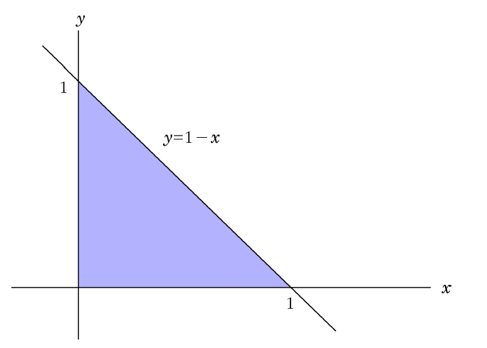
b) 적분영역은 \(A=\{(x,y) : 0\le x \le 1, \hskip5pt 0\le y \le 1, \hskip5pt x+y\le 0.5 \}\)이다. \[\iint_A f(x,y)dydx=\int_0^{0.5} \left\lbrace \int_0^{0.5-x} 24xydy\right\rbrace dx=0.0625\]
혼합땅콩에 포함된 아몬드와 캐슈의 무게가 전체 무게의 50% 이하일 공간
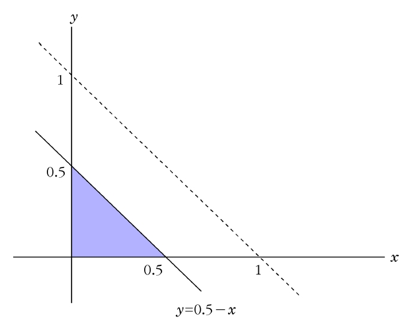
c) 아몬드 무게에 대한 주변확률밀도함수는 다음과 같이 구할 수 있다. \[f_X(x) = \int_{-\infty}^{\infty} f(x,y)dy=\int_{0}^{1-x} 24xydy=12x(1-x)^2, \hskip5pt 0\le x \le 1\]
\(X,Y\)가 동일한 표본공간 내에서 정의된 이변량 이산형 확률변수라고 하면, 결합누적분포함수 \(F(x,y)\)는 다음과 같이 정의된다. \[F(x,y)=\sum_{w_1\le x}\sum_{w_2\le y} f(w_1,w_2)\] 또한 \(X\), \(Y\)가 이변량 연속형 확률변수라고 하면, 결합누적분포함수 \(F(x,y)\)는 다음과 같이 정의된다. \[F(x,y)=\int_{-\infty}^{x}\int_{-\infty}^{y} f(w_1,w_2)dw_2dw_1\] 여기서 \(-\infty < x < \infty\), \(-\infty <y < \infty\) 이다.
결합누적분포함수 \(F(x,y)\)는 다음이 성립한다.
모든 \(y\)에 대해서 \(F(-\infty ,y)=\lim\limits_{x \rightarrow -\infty}F(x,y)=0\),
모든 \(x\)에 대해서 \(F(x,-\infty)=\lim\limits_{y \rightarrow -\infty}F(x,y)=0\),
\(\lim\limits_{x,y \rightarrow \infty}F(\infty,\infty)=1\).
\(x_1 < x_2, y_1< y_2\)이면
\(P(x_1 < X < x_2, y_1 < Y < y_2)=F(x_2,y_2)-F(x_2,y_1)-F(x_1,y_2)+F(x_1,y_1)\ge 0\)
- 이변량 확률변수 \(X\), \(Y\)의 결합확률밀도함수를 이용하여 \(X\), \(Y\) 각각의 주변확률밀도함수를 구하는 방법과 동일하게 \(X\), \(Y\)의 결합누적분포함수 \(F(x,y)\)를 이용하는 방법으로 \(X\), \(Y\) 각각의 주변누적분포함수(marginal cumulative distribution function; \(F_X(x)\), \(F_Y(y)\))를 구할 수 있음
6.2 두 확률변수의 독립과 조건부분포
6.2.1 두 확률변수의 독립
두 사상 \(A\), \(B\)가 독립일 필요충분조건 \[P(A \cap B)=P(A)P(B)\]
사상 \(A=(\{X=x\})\)와 \(B=(\{Y=y\})\)가 독립이면, 두 확률변수 \(X\)와 \(Y\)는 독립
\(P(\{X=x,Y=y\})=P(\{X=x\})P(\{Y=y\})=p_X(x)p_Y(y)\)
\(X\)와 \(Y\)의 결합분포가 두 주변분포의 곱으로 표시되면 두 확률변수 \(X\)와 \(Y\)는 독립
두 확률변수 \(X\)와 \(Y\)가 독립(stochastically independent 또는 statistically independent)일 필요충분조건은 다음과 같다. 임의의 \(X\), \(Y\)에 대해 \[p(x,y)=p_X(x)p_Y(y), \hskip5pt \text{단} \hskip5pt X, Y\text{는 이산형 확률변수}\] \[f(x,y)=f_X(x)f_Y(y), \hskip5pt \text{단} \hskip5pt X, Y\text{는 연속형 확률변수}\]
\(I\times J\) 이원분할표에서 각 칸의 확률을 \(p_{ij}\), \(i=1,\ldots,I\), \(j=1,\ldots,J\)라 할 때 다음과 같이 도식화할 수 있음
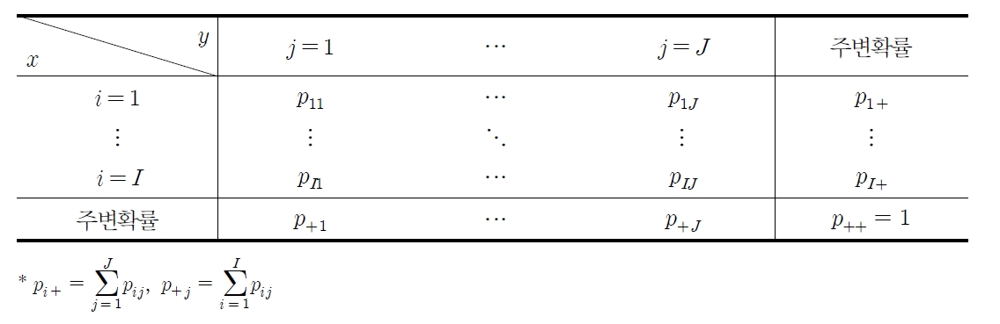
행의 확률변수 \(X\)와 열의 확률변수 \(Y\)가 독립일 필요충분조건은 임의의 \(i\), \(j\)에 대해 \(p_{ij}=p_{i+}p_{+j}\)임
즉, 각 칸에 대해 사상의 독립처럼 임의의 칸의 결합확률은 행의 주변확률과 열의 주변확률의 곱과 같아야 함
두 개의 정사면체 주사위를 던지는 실험을 생각해 보자. 확률변수 \(X\)는 첫 번째 사면체의 눈금의 수라고 하고, \(Y\)를 두 사면체 중 눈금의 수가 큰 사면체의 눈금의 수라고 할 때, 다음의 확률분포를 갖는다고 한다. \(X\)와 \(Y\)는 독립인가?
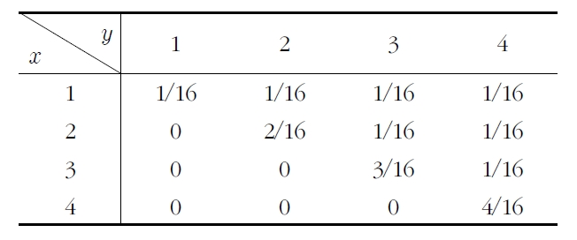
(풀이) \(x=1, y=1\)인 경우, \(P(X=1,Y=1)=1/16\)이고 \[P(X=1)P(Y=1)=4/16\times 1/16=1/64\ne 1/16=P(X=1,Y=1)\]
이므로 두 확률변수 \(X\)와 \(Y\)는 서로 독립이 아니다.
다음의 확률변수 \(X\)와 \(Y\)가 독립임을 보여라. \[f(x,y)=\begin{cases} 4xy, \hskip5pt 0\le x \le 1, \hskip5pt 0\le y\le 1\\ 0, \hskip5pt \text{그 외} \end{cases}\]
(풀이) \[f_X(x)=\int_0^1 f(x,y)dy=\int_0^1 4xydy=[2xy^2]_0^1=2x, \hskip5pt 0\le x\le 1\] \[f_Y(y)=\int_0^1 f(x,y)dx=\int_0^1 4xydx=[2x^2y]_0^1=2y, \hskip5pt 0\le y\le 1\]
\(f(x,y)=f(x)f(y)\)가 성립하므로 확률변수 \(X\)와 \(Y\)는 서로 독립이다.
확률변수 \(X\)와 \(Y\)가 독립이 아님을 보여라. \[f(x,y)=\begin{cases} 2, \hskip5pt 0\le y \le x\le 1\\ 0, \hskip5pt \text{그 외} \end{cases}\]
(풀이) \[f_X(x)=\int_0^x f(x,y)dy=\int_0^x 2dy=2x, \hskip5pt 0\le x\le 1\] \[f_Y(y)=\int_y^1 f(x,y)dx=\int_y^1 2dx=2(1-y), \hskip5pt 0\le y\le 1\]
\(f(x,y)\ne f(x)f(y)\)이므로 확률변수 \(X\)와 \(Y\)는 서로 독립이 아니다.
6.2.2 두 확률변수의 조건부분포
두 확률변수 \(X\)와 \(Y\)의 결합확률밀도함수 \(f(x,y)\)와 주변확률밀도함수 \(f_X(x)\)를 갖는 확률변수가 있다고 하면 \(f_X(x)\ne 0\)인 모든 \(x\)에 대해 \(X=x\)가 주어졌을 때 \(Y\)의 조건부 확률밀도함수는 다음과 같다. \[f_{Y|X}(y|x)=\frac{f(x,y)}{f_X(x)}, \hskip5pt -\infty < y < \infty\]
\(X=x\)가 주어졌을 때 \(Y\)의 조건부 확률밀도함수 \(f_{Y|X}(y|x)\)의 정의는 \(A\) 사건이 발생했을 때 \(B\) 사건이 일어날 조건부 확률인 \(P(B|A)\)의 정의와 같음
조건부 확률밀도함수는 일반적 확률밀도함수의 특성을 그대로 가짐. 즉, 조건부 확률밀도함수는 비음이고 \(\int_{-\infty}^{\infty} f_{Y|X}(y|x)dy=1\) \[\int_{-\infty}^{\infty} f_{Y|X}(y|x)dy=\int_{-\infty}^{\infty} \frac{f(x,y)}{f_X(x)}dy=\frac{1}{f_X(x)}\int_{-\infty}^{\infty}f(x,y)dy=\frac{f_X(x)}{f_X(x)}=1\]
조건부 확률밀도함수는 \(x\)가 확률변수 \(X\)의 값으로 주어질 때 확률변수 \(Y\)의 확률밀도함수
두 확률변수 \(X\)와 \(Y\)의 결합확률밀도함수 \(f(x,y)\)와 주변확률밀도함수 \(f_X(x)\)를 갖는 확률변수가 있다고 하면 \(f_X(x)\ne 0\)인 모든 \(x\)에 대해 \(X=x\)가 주어졌을 때 \(Y\)의 조건부 누적분포함수는 다음과 같다. \[F_{Y|X}(y|x)=\int_{-\infty}^y f_{Y|X}(w|x)dw\]
확률변수 \(X\), \(Y\)에 대한 결합확률밀도함수가 다음과 같다. \(x=0.8\)일 때 \(Y\le 0.5\)의 확률을 구하라. \[f(x,y)=6(x+y^2)/5, \hskip5pt 0 \le x \le, \hskip5pt 0 \le y \le 1\]
(풀이) \(X\)의 주변확률밀도함수는 다음과 같다. \[f_X(x)=\int_0^1 6(x+y^2)/5dy=6x/5+2/5, \hskip5pt 0\le x \le 1\]
\(x=0.8\)로 주어졌을 때 \(Y\)의 조건부 확률밀도함수는 다음과 같다. \[f_{Y|X}(y|0.8)=\frac{f(0.8,y)}{f_X(0.8)}=\frac{1.2(0.8+y^2)}{1.2(0.8)+0.4}=\frac{1}{34}(24+30y^2), \hskip5pt 0\le y \le 1\]
따라서 \[P(Y\le 0.5|X=0.8)=\int_0^{0.5} f_{Y|X}(y|0.8)dy=\int_0^{0.5}\frac{1}{34}(24+30y^2)dy=0.39\]
6.3 기대값
6.3.1 공분산과 상관계수
두 확률변수 \(X\)와 \(Y\)는 결합확률밀도함수 \(f(x,y)\)를 따를 때, \(X\)와 \(Y\)의 함수인 \(h(X,Y)\)의 기대값은 다음과 같이 구할 수 있다. \[E(h(X,Y))=\sum_x\sum_y h(x,y)p(x,y), \hskip5pt X\text{와}\hskip3pt Y\text{는 이산형 확률변수}\] \[E(h(X,Y))=\int_{-\infty}^{\infty}\int_{-\infty}^{\infty} h(x,y)f(x,y)dxdy, \hskip5pt X\text{와}\hskip3pt Y\text{는 연속형 확률변수}\]
확률변수 \(X\)와 \(Y\)가 독립이 아니라면 서로 상관관계가 존재
상관관계란 선형관계를 의미
상관관계를 나타내는 척도로서 공분산(covariance)은 다음과 같이 정의
\(X\)와 \(Y\)가 동일한 표본공간 내에서 정의된 확률변수라고 하면, \(X\), \(Y\)의 공분산은 \(Cov(X,Y)\) 또는 \(\sigma_{X,Y}\)로 표시되고 다음과 같이 정의된다. \[Cov(X,Y)=E[(X-\mu_X)(Y-\mu_Y)]=E(XY)-\,\mu_X\mu_Y\] 여기서 \(\mu_X=E(X)\), \(\mu_Y=E(Y)\)이다.
공분산은 확률변수 \(X\)의 증감에 따른 \(Y\)의 증감을 측정
\(X\)가 증가함에 따라 \(Y\)도 증가한다면(또는 \(X\)가 감소함에 따라 \(Y\)도 감소한다면) 공분산은 양의 값을 가지며 반대로 \(X\)가 증가함에 따라 \(Y\)가 감소한다면(또는 \(X\)가 감소함에 따라 \(Y\)가 증가한다면) 공분산은 음의 값을 가짐
공분산이 0이면 두 변수 간에 선형관계가 없다는 의미
\(Y=X\)이면 \(X\)와 \(Y\)의 공분산은 \(X\)와 \(Y\)의 개별적 분산과 같음
공분산과 산점도
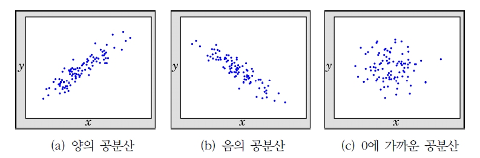
확률변수 \(X\), \(Y\)의 결합확률질량함수가 다음과 같을 때 \(X, Y\)의 공분산을 구하라. \[p(x,y)=\frac{x+y}{21}, \hskip5pt x=1,2, \hskip4pt y=1,2,3\]
(풀이) \(X\), \(Y\) 각각의 주변확률질량함수를 구하면 다음과 같다. \[p_X(x)=\sum_{y=1}^3\frac{x+y}{21}=\frac{6+3x}{21}, \hskip5pt x=1,2\] \[p_Y(y)=\sum_{x=1}^2\frac{x+y}{21}=\frac{3+2y}{21}, \hskip5pt y=1,2,3\] \[\mu_X=\sum_{x=1}^2 xp_X(x)=(1)\frac{9}{21}+(2)\frac{12}{21}=\frac{33}{21}\] \[\mu_Y=\sum_{y=1}^3 yp_Y(y)=910\frac{5}{21}+(2)\frac{7}{21}+(3)\frac{9}{21}=\frac{46}{21}\]
따라서 \(X\)와 \(Y\)의 공분산은 다음과 같이 계산된다. \[\begin{aligned} Cov(X,Y)&= E(XY)-\mu_X\mu_Y\\ &=\sum_{x=1}^2\sum_{y=1}^3 xyp(x,y)-\mu_X\mu_Y\\ &=(1)(1)\frac{2}{21}+(1)(2)\frac{3}{21}+(1)(3)\frac{4}{21}+(2)(1)\frac{3}{21}+(2)(2)\frac{4}{21}\\ \hskip5pt &+(2)(3)\frac{5}{21}-\frac{33}{21}\cdot \frac{46}{21}\\ &=-\frac{6}{441}\end{aligned}\]
다음의 결합확률밀도함수를 이용하여 \(X, Y\)의 공분산을 구하라. \[f(x,y)=x+y, \hskip5pt 0\le x\le 1, \hskip5pt 0\le y\le 1\]
(풀이) \(X\), \(Y\) 각각의 기대값은 다음과 같다.(예제 6-4 참조) \[\mu_X=\int_0^1 x(x+1/2)dx=7/12, \hskip10pt \mu_Y=\int_0^1 y(y+1/2)dy=7/12\] \[E(XY)=\int_0^1\int_0^1 xy(x+y)dydx=\int_0^1 x^2/2+x/3 dx=1/3\]
따라서 공분산은 다음과 같다. \[Cov(X,Y)=E(XY)-\mu_X\mu_Y=\frac{1}{3}-\left( \frac{7}{12}\right) ^2=-\frac{1}{144}\]
확률변수 \(X\)와 \(Y\)가 각각 사람의 키(m)와 몸무게(kg)를 나타낸다고 할 때, 키와 몸무게의 단위를 cm와 g으로 변경하면 공분산은 일치하지 않음 \[Cov(X,Y)\ne Cov(100X, 1000Y)\]
실제로 계산하면 \(Cov(100X, 1000Y)=10^5 Cov(X,Y)\)이고 확률변수의 측정단위에 따라 공분산의 값이 달라짐
이러한 문제점을 해결하기 위해 상관계수(coefficient of correlation)를 이용
\(X\)와 \(Y\)가 동일한 표본공간 내에서 정의된 확률변수라고 하면, 각각의 표준편차 \(\sigma_X\), \(\sigma_Y\)가 0이 아니라면 \(X\), \(Y\)의 상관계수 \(\rho_{X,Y}\)는 다음과 같이 정의된다. \[\rho_{X,Y}=\frac{Cov(X,Y)}{\sigma_X \sigma_Y}\]
공분산 대신 상관계수를 사용하면 측정단위에 상관없이 두 확률변수의 상관관계를 나타내주게 됨
상관계수는 두 변수 사이의 선형정도를 나타내는 계수로서 두 변수 \(X\), \(Y\)가 서로 선형관계가 있는지 없는지, 만약 있다면 어느 정도로 있는지는 알 수 있으나 두 변수 사이의 인과관계는 밝힐 수 없음
또한 \(X\)와 \(Y\)간에 완전한 양의 선형관계가 있으면(즉, \(Y=a+bX, \hskip5pt b>0\)) 상관계수는 1이 되고, 완전한 음의 선형관계가 있으면(즉, \(Y=a+bX, \hskip5pt b<0\)) 상관계수는 -1이 됨
상관계수는 오직 두 확률변수의 선형관계를 나타내는 척도
\(\rho=0\)은 \(X\)와 \(Y\)사이에 선형관계는 없음을 의미하나, \(X\)와 \(Y\) 사이에 강한 비선형관계가 존재할 수 있음
상관관계
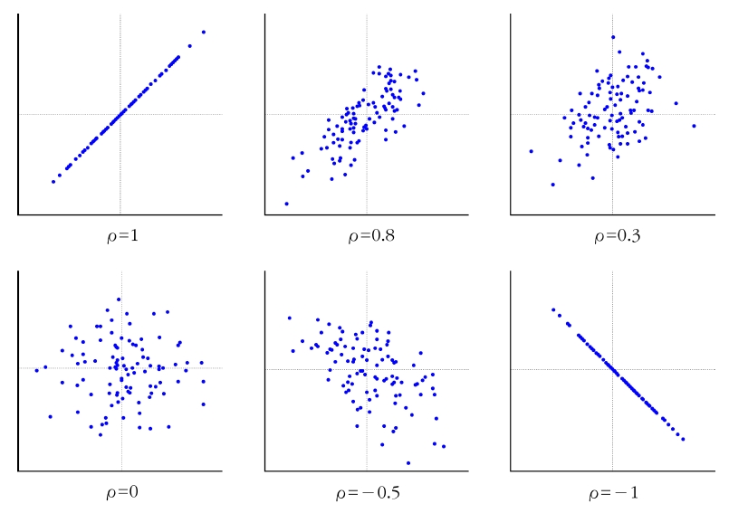
Cauchy-Schwarz 부등식 \(E(X^2)<\infty\), \(E(Y^2)<\infty\)인 확률변수 \(X\), \(Y\)에 대해 다음의 부등식이 성립한다. \[[E(XY)]^2 \le E(X^2)E(Y^2)\] 만약 \(Y=cX\)(\(c\)는 상수)이면 등호가 성립한다.
Cauchy-Schwarz 부등식을 이용하여 \([E(X)]^2 \le E(X^2)\)을 보여라.
(풀이)
Cauchy-Schwarz 부등식에 \(Y=1\)을 대입하면 \([E(X)]^2 \le E(X^2)\)이 성립한다.
임의의 두 확률변수 \(X\), \(Y\)에 대해 다음이 성립한다. \[-1\le \rho_{X,Y} \le 1\]
(증명) \[\begin{aligned} \rho_{X,Y}&=\frac{Cov(X,Y)}{\sigma_X \sigma_Y}=\frac{E(X-\mu_X)(Y-\mu_Y)}{\sigma_X \sigma_Y}\\ &=E\left( \frac{X-\mu_X}{\sigma_X}\right) \left( \frac{Y-\mu_Y}{\sigma_Y}\right) =E(Z_X Z_Y)\end{aligned}\]
Cauchy-Schwarz 부등식에 의해 다음과 같다. \[\rho_{X,Y}^2=[E(Z_X Z_Y)]^2\le E(Z_X^2)E(Z_Y^2)=1\]
따라서 \(\rho_{X,Y}^2\le 1\)이 되므로 \(-1\le \rho_{X,Y} \le 1\)이 성립하게 된다.
다음의 결합확률밀도함수를 이용하여 \(X, Y\)의 상관계수를 구하라. \[f(x,y)=x+y, \hskip5pt 0\le x\le 1, \hskip5pt 0\le y\le 1\]
(풀이) \(X\), \(Y\) 각각의 기대값은 다음과 같다.(예제 6-17 참조) \[\mu_X=\mu_Y=7/12, \hskip10pt E(XY)=1/3, \hskip10pt Cov(X,Y)=-\frac{1}{144}\]
\(X\)와 \(Y\)의 분산은 다음과 같다. \[Var(X)=E(X^2)-\mu_X^2=\int_0^1 x^2(x+1/2)dx-(7/12)^2=\frac{11}{144}=Var(Y)\]
따라서 상관계수는 다음과 같다. \[\rho_{X,Y}=\frac{Cov(X,Y)}{\sigma_X \sigma_Y}=\frac{-1/144}{11/144}=-\frac{1}{11}\]
두 확률변수 \(X\)와 \(Y\)가 서로 독립일 경우 다음이 성립한다. 1. \(E(XY)=E(X)E(Y)\) 2. \(Cov(X,Y)=0, \hskip5pt \rho_{X,Y}=0\) 3. \(Var(X\pm Y)=Var(X)+Var(Y)\) 4. \(g_1(x)\)와 \(g_2(x)\)가 각각 \(X\)와 \(Y\)만의 함수라면, \[E[g_1(X)g_2(Y)]=E[g_1(X)]E[g_2(Y)]\]
두 확률변수 \(X\)와 \(Y\)가 독립일 필요조건은 되지만 충분조건은 아님
다시 말해 위 정리가 성립한다고 해서 두 확률변수 \(X\)와 \(Y\)가 독립이라는 것은 아님
두 확률변수가 독립이면 공분산은 0이 되지만, 공분산이 0이라고 해서 두 변수가 독립은 아님
6.3.2 조건부 기대값
\(X\)와 \(Y\)가 동일한 표본공간 내에서 정의된 확률변수이고 \(g(X,Y)\)는 두 확률변수의 함수라고 하자. \(E[g(X,Y)|X=x]\)로 표현되는 \(X=x\)가 주어졌을 때 \(g(X,Y)\)의 조건부 기대값은 다음과 같다.
\(X\), \(Y\)가 이산형 확률변수일 때 \[E[g(X,Y)|X=x]=\sum_y g(x,y)p_{Y|X}(y|x)\]
\(X\), \(Y\)가 연속형 확률변수일 때 \[E[g(X,Y)|X=x]=\int_{-\infty}^{\infty} g(x,y)f_{Y|X}(y|x)dy\]
- 만약 \(g(X,Y)=Y\)이면 \(E[g(X,Y)|X=x]=E(Y|x)\)로 정의되며, 조건부분포의 기대값인 \(E(Y|x)\)와 \(E[g(X,Y)|x]\)는 주어진 \(x\)의 함수
다음의 결합확률밀도함수를 이용하여 \(X=x\)가 주어졌을 때 \(Y\)의 조건부 확률밀도함수와 조건부 누적분포함수를 구하고 \(X=x\)가 주어졌을 때 \(Y\)의 조건부 기대값을 구하라. \[f(x,y)=x+y, \hskip5pt 0\le x\le 1, \hskip5pt 0\le y\le 1\]
(풀이) \(X\)의 주변확률밀도함수는 \(x+1/2, \hskip5pt 0<x<1\)이므로 \[f_{Y|X}(y|x)=\frac{x+y}{x+1/2}, \hskip5pt 0<y<1\]
조건부 누적분포함수는 다음과 같다. \[F_{Y|X}(y|x)=\int_0^y \frac{x+w}{x+1/2}dw=\frac{xy+y^2/2}{x+1/2}, \hskip5pt 0<y<1\]
조건부 기대값은 다음과 같다. \[E(Y|X=x)=\int_0^1 y\frac{x+y}{x+1/2}dy=\frac{x/2+1/3}{x+1/2}\]
두 확률변수 \(X\)와 \(Y\)에 대해 \(X=x\)가 주어졌을 때 \(Y\)의 조건부 분산은 다음과 같이 표현할 수 있다. \[Var[Y|X=x]=E(Y^2|X=x)-(E(Y|X=x))^2\]
두 확률변수 \(X\)와 \(Y\)에 대해 다음이 성립한다. 1. \(E[g(Y)]=E[E[g(Y)|X]]\) 2. \(Var(Y)=E[Var(Y|X)]+Var[E(Y|X)]\)
(증명) \[\begin{aligned} E[E[g(Y)|X]]&=\int_{-\infty}^{\infty}E[g(Y)|x]f_X(x)dx=\int_{-\infty}^{\infty}\left[ \int_{-\infty}^{\infty} g(y)f_{Y|X}(y|x)dy \right] f_X(x)dx\\ &=\int_{-\infty}^{\infty} \int_{-\infty}^{\infty} g(y)f_{X,Y}(x,y)dydx=\int_{-\infty}^{\infty}g(y)f_Y(y)dy=E[g(Y)]\end{aligned}\]
(증명) \[\begin{aligned} E[Var(Y|X)]&=E[E(Y^2|X)]-E[E(Y|X)^2]\\ &=E(Y^2)-E(Y)^2-E[E(Y|X)^2]+E(Y)^2\\ &=Var(Y)-E[E(Y|X)^2]+E[E(Y|X)]^2\\ &= Var(Y)-Var[E(Y|X)]\end{aligned}\]
[정리 6.6] \(X\)와 \(Y\)가 확률변수이며, \(g_1(Y)\)와 \(g_2(Y)\)가 각각 \(Y\)만의 함수인 경우
\(E[g_1(Y)+g_2(Y)|X=x]=E[g_1(Y)|X=x]+E[g_2(Y)|X=x]\)
\(E[g_1(Y)g_2(X)|X=x]=g2(x)E[g_1(Y)|X=x]\)
6.4 두 확률변수의 선형결합
두 확률변수 \(X\)와 \(Y\)와 임의의 상수 \(a\), \(b\)에 대해 다음이 성립한다. 1. \(E(aX+bY)=aE(X)+bE(Y)\) 2. \(Var(aX\pm bY)=a^2Var(X)+b^2Var(Y)\pm 2abCov(X,Y)\)
- (증명) \[\begin{aligned} E(aX+bY)&=\sum_x\sum_y (aX+bY)p(x,y)\\ &= a\sum_xx\sum_yp(x,y)+b\sum_y\sum_xp(x,y)=aE(X)+bE(Y)\end{aligned}\] \[\begin{aligned} V(aX+bY)&=E([aX+bY-E(aX+bY)]^2)=E([a(X-E(X))+b(Y-E(Y))]^2)\\ &=a^2E([X-E(X)]^2)+b^2E([Y-E(Y)]^2)\\&+2abE[(X-E(X))(Y-E(Y))]\\ &=a^2Var(X)+b^2Var(Y)+2abCov(X,Y)\end{aligned}\]
다음은 \(X\)와 \(Y\)의 확률분포이다. 다음 물음에 답하라.
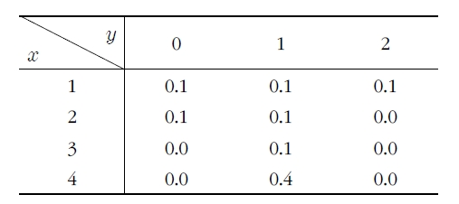
\(X\)와 \(Y\)의 결합분포를 이용하여 \(T=X+Y\)의 평균을 구하라.
\(T\)의 분포를 구하고 \(E(T)\)를 구하라.
\(E(X)\), \(E(Y)\)를 구하고, \(E(T)=E(X)+E(Y)\), 즉 선형성이 성립함을 확인하라.
(풀이) a) \(X\)와 \(Y\)의 결합분포를 이용하여 \(T\)의 평균을 구하면 다음과 같다. \[\begin{aligned} E(T)&=\sum_x\sum_y(x+y)p(x,y)\\ &=(1+0)0.1+(1+1)(0.1)+(1+2)0.1+(2+0)(0.1)\\ &+(2+1)0.1+(3+1)0.1+(4+1)0.4\\ &=3.5\end{aligned}\]
b) \(T\)의 확률분포를 구하면 다음과 같다.
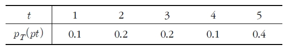
\[E(T)=\sum_{t=1}^5 tp_T(t)=1(0.1)+2(0.2)+3(0.2)+490.1)+5(0.4)=3.5\]
c) \(X\)와 \(Y\)의 주변분포는 다음과 같다.
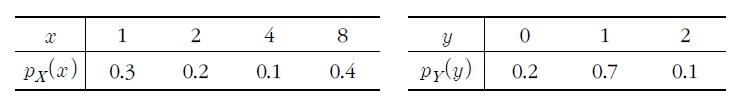
\[E(X)=1(0.3)+2(0.2)+390.1)+4(0.4)=2.6\] \[E(Y)=0(0.2)+1(0.7)+2(0.1)=0.9\]
따라서 \(E(T)=E(X)+E(Y)\)가 성립한다. 즉, 평균의 선형성이 성립함을 알 수 있다.
확률변수 \(X\), \(Y\), \(W\), \(T\)와 임의의 상수 \(a\), \(b\), \(c\), \(d\)에 대해 다음이 성립한다. 1. \(Cov(aX+b,cY+d)=acCov(X,Y)\) 2. \(Cov(X+Y,Z+W)=Cov(X,Z)+Cov(X,W)+Cov(Y,Z)+Cov(Y,W)\) 3. \(a\)와 \(c\)의 부호가 같다면 \(\rho_{aX+b, cY+d}=\rho_{X,Y}\) 4. \(a\)와 \(c\)의 부호가 다르다면 \(\rho_{aX+b, cY+d}=-\rho_{X,Y}\)
(증명) 생략
정리 6.8을 이용하면 \(Y=aX+b(a\ne 0)\)일 때 \(X\)와 \(Y\)의 상관계수는 \(\rho_{X,Y}=\pm 1\)이 됨
즉, \(a>0\)이면 \(\rho_{X,Y}=1\)이고 \(a<0\)이면 \(\rho_{X,Y}=-1\)
6.5 이변량 정규분포
결합확률밀도함수 \(f(x,y)\)
\(f(x,y)\)는 결합확률밀도함수이다.
\(X\sim N(\mu_X, \sigma_X^2)\)이고 \(Y\sim N(\mu_Y, \sigma_Y^2)\), (\(\sigma_X>0\), \(\sigma_Y>0\))이다.
\(\rho\)는 \(X\)와 \(Y\)의 상관계수이다 (\(-1<\rho<1\)).
이런 형태의 결합확률밀도함수를 이변량 정규확률밀도함수(bivariate normal probability density function)라 하며 다음과 같음
이러한 결합확률밀도함수의 확률변수 \(X\)와 \(Y\)는 이변량 정규분포(bivariate normal distribution)를 따른다고 함
확률변수 \(X\)와 \(Y\)가 독립이라면 상관계수가 \(0\)이므로 이변량 정규확률밀도함수는 간단히 표현 가능
\[f(x,y)=\frac{1}{2\pi\sigma_X\sigma_Y}e^{-\frac{1}{2}\left[ \left(\frac{x-\mu_X}{\sigma_X} \right)^2+ \left(\frac{y-\mu_Y}{\sigma_Y} \right)^2 \right] }, \hskip5pt -\infty <x<\infty, \hskip5pt -\infty<y <\infty\]
이는 일변량 정규확률밀도함수 \(f_X(x)\)와 \(f_Y(y)\)의 곱과 같음
일반적으로 두 개의 확률변수가 독립이고 양의 표준편차를 갖는다면 \(\rho=0\)이나 반대로 \(\rho=0\)이라 해서 두 변수가 독립이라고 할 수 없음
확률변수 \(X\)와 \(Y\)가 이변량 정규분포를 따르는 경우에는 상관계수인 \(\rho\)가 \(0\)이면 두 확률변수는 독립!!!
이변량 정규분포
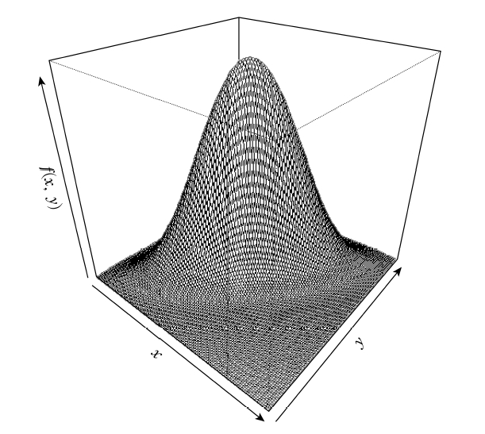